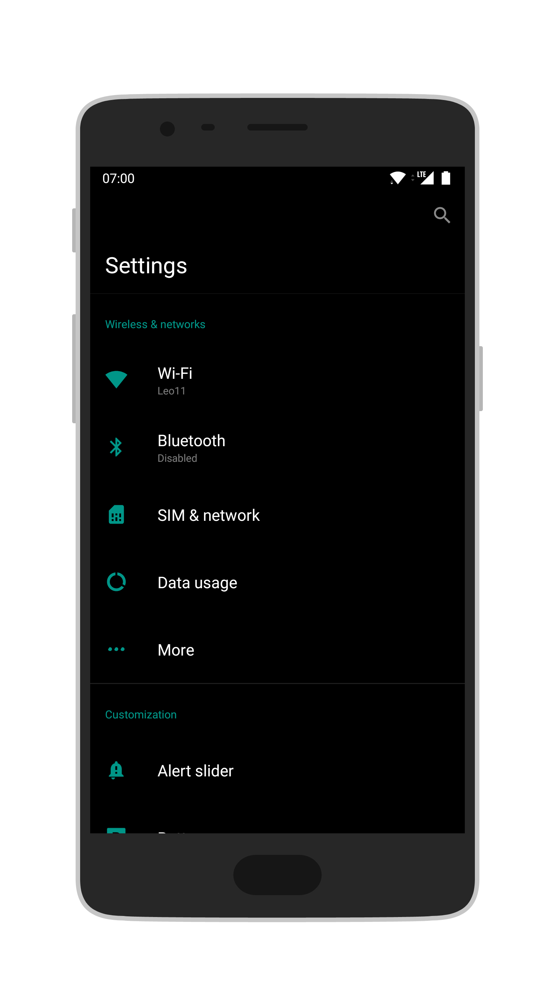
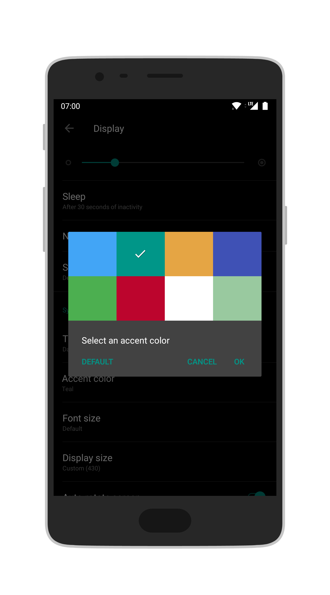
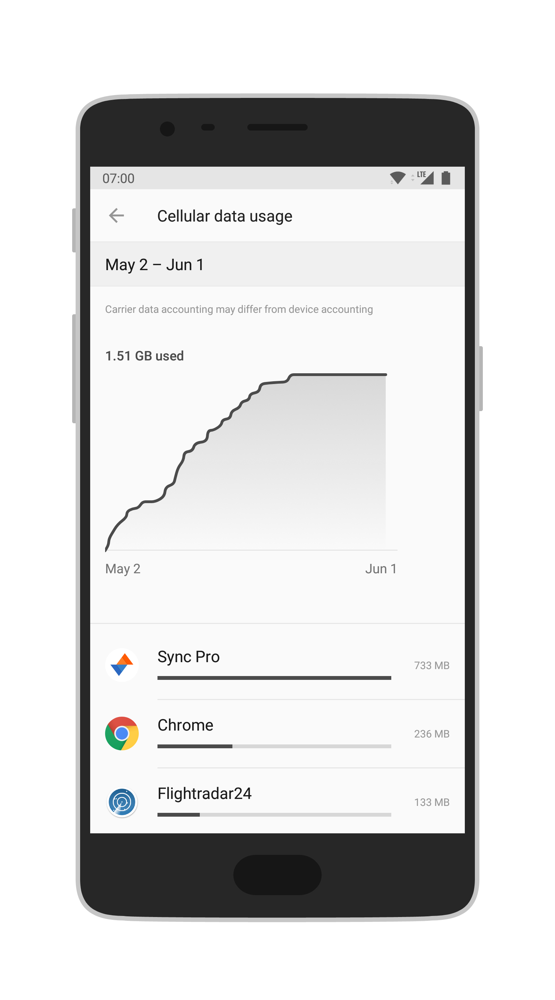
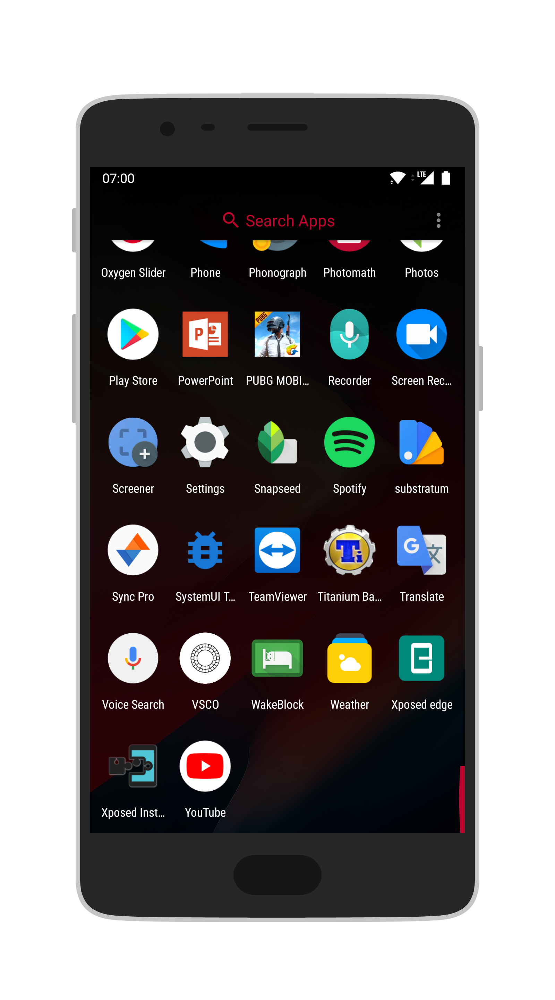
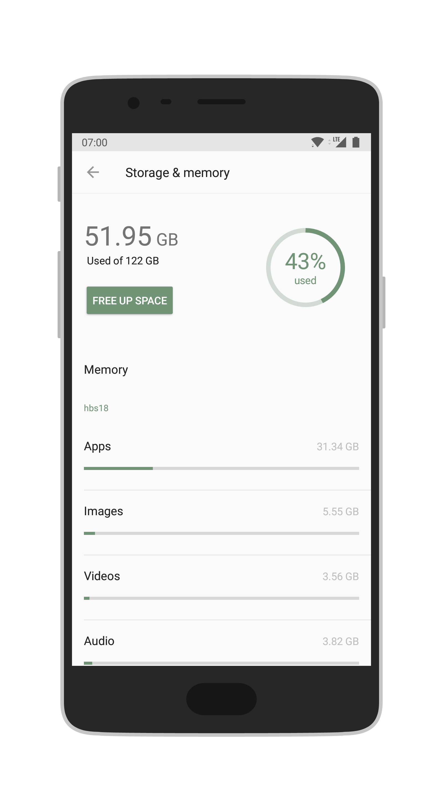
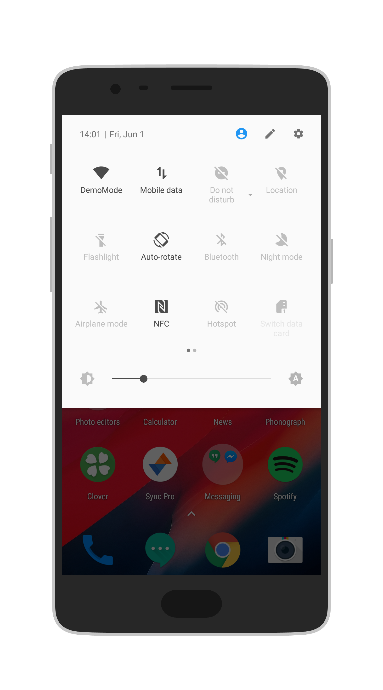
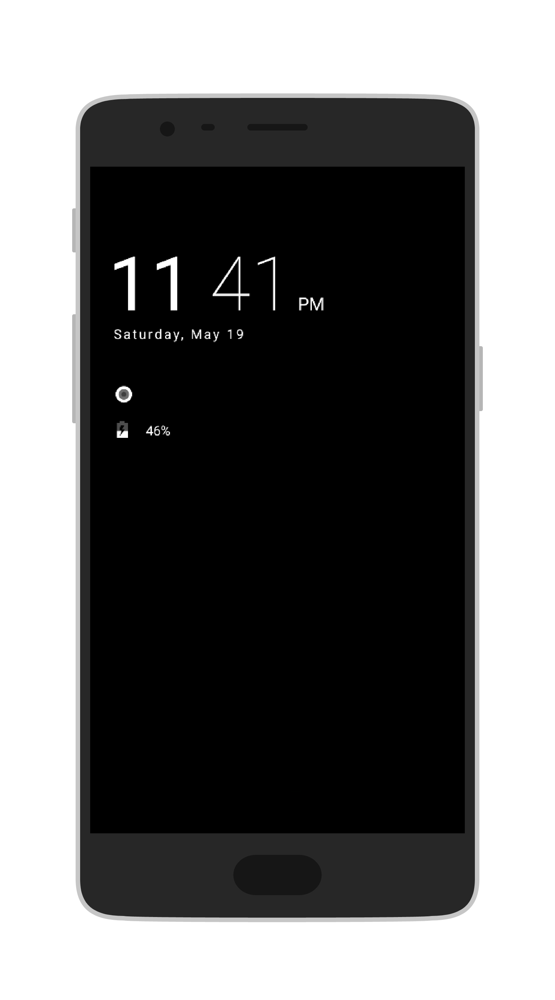
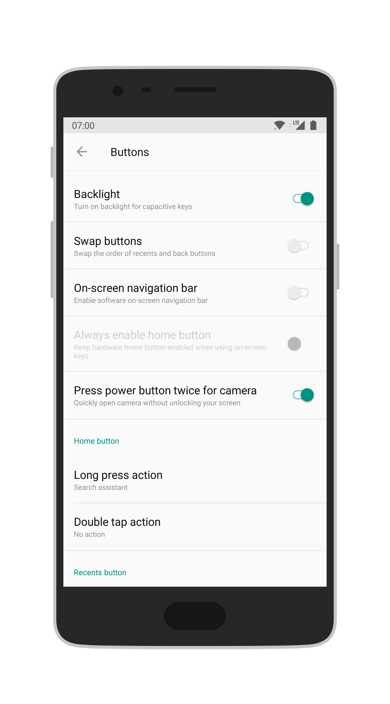

OxygenOS Improvements
This is a Substratum module, an offshoot from the popular Ozone theme, which modifies some elements of OxygenOS.
What does this theme do?
- Adds new accent colors
- Makes the Ambient Display fully monochrome
- Actually themes the OnePlus launcher
- Has better compatibility than Ozone because it doesn't theme so many UI elements
- And who knows what else in the future...
What do the theme components do?
- com.oneplus.security - themes the data usage menu
- com.oneplus.aod - makes the Ambient Display monochrome
- net.oneplus.launcher - themes the OnePlus launcher's app drawer
- com.android.phone - themes the SIM and network menu
- com.android.settings - adds the custom accent colors
- com.android.systemui - moves the clock to the left side of the status bar (this is optional, don't install it if you want the clock to stay on the right)
How to install?
To install, download the app from the link below and install it. The app is a Substratum theme engine module, meaning that working Substratum is a prerequisite. Once the app is installed open the Substratum manager, enable the installed theme and reboot your device (this is important since some elements of the theme don't work properly before a restart for some reason)
Download
Download link (2 MB .apk)
Screenshots







